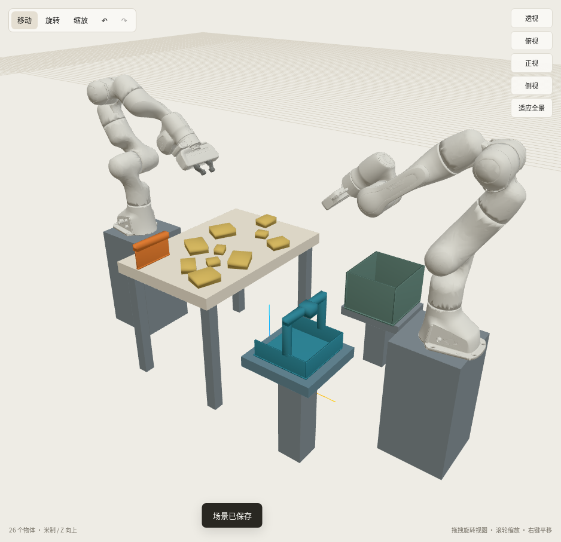

← 完整十块执行视频A 向外移 10 厘米 · 提速布局候选
A 持料斗的一侧向外移 10 厘米，支座随动。B 的刮料工作区、55 厘米台面、工具、回收箱及十块散料沿用现有布局。
以下为实际 Studio 的接料位几何示意，使用同一相机位置与视场；不是新版物理执行录像。
候选初始布局

已完成的运动学筛查
| 检查 | 结果 |
|---|
| 关键姿态 / 双机接料位 | 16 / 16，2 / 2 通过 |
| 抓斗、两个接料位、归还 | 77.1 秒 → 66.8 秒 |
| 同布局卸料组件：合并空斗扶正与搬运提速 | 170.5 秒 → 110.9 秒（约减少35%） |
以上耗时来自 CPU 运动学工具路径，卸料组件转到75°、没有真实碎料接触，不代表新版完整十块物理耗时。原生物理和新版完整视频尚未验证。